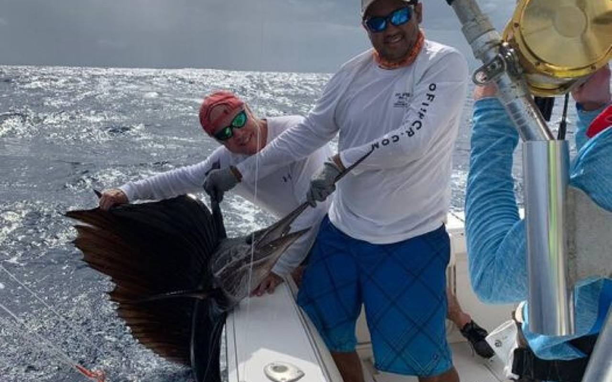

Ready to fish Guanacaste?
Seventeen boats, two bases, one honest recommendation.

Are you ready to explore the Costa Rican waters and try your hand at fishing? You’ll be hard-pressed to find better fishing in Central America. Find out why, below.
These fish can be found all year around in Guanacaste and throughout Costa Rica. Due to the deep Pacific waters, underwater landscape, plentiful live bait, and currents, we have access to world-class fishing right here in our backyard: Guanacaste, Tamarindo Beach, Flamingo Beach, Papagayo Gulf. For more information on these areas, find out at our page [https://www.gofishcr.com/guanacaste-fishing/.] https://www.gofishcr.com/guanacaste-fishing/.
The deep waters of the Pacific are filled with creatures and fish that are particularly attractive to the Sailfish. While Sailfish are not as big as Marlins, they are still quite the impressive catch with their showy fin and lengths of up to 10 feet. And with their speed, they will give a great fight that you can tell all your fisherman buddies about for years to come.
Wahoo can be mistaken for Barracuda with their long and slender bodies. This fish loves the rocky cliffs found at Las Catalinas and Bat Islands, famous fishing spots here in Guanacaste, Costa Rica. Wahoo fish in Guanacaste are normally between 5 to 6 feet in length and around 25 pounds in weight. A few lucky fisherman have found a Wahoo up to 8 ft long! Will you be among them?! Only one way to find out!
Did you know? Mahi-Mahi means “very strong” in Hawaiian. And this is just as true in Costa Rica as it is off the coasts of Hawaii. If you are looking for a true adventure, you will find joy in the fight against this fish. Mahi-Mahi, also known as Dorado, is one of the most prolific fish in the ocean, so while there are plenty to catch, only the strongest among us can bag a Mahi-Mahi. Pro-tip: these fish like to hide under floating debris, which is found more often during the rainy season in Costa Rica as the rivers flush out natural debris into the oceans through estuaries.
The Roosterfish is natvie to the Papagayo Gulf and can be found at the end of fishing poles year round. You can expect a moderately sized Roosterfish to weigh in between 20 and 50 pounds, with the rare catch being up to 100 pounds. Peak Roosterfish season is between May through November, but they also like the cloudier waters which come during December-February with the Papagayo winds.
If you want to have a cookout after your fishing expedition, go after Yellowfin Tuna! Yellowfin, Skipjack, and Bigeye tuna are all found in Costa Rica, mostly during the months of June through October. This is a fun fish to catch and can range from 30 pounds to 300 pounds! Yellowfin tuna is the most delicious of the tuna family, and makes for great sushi or a tuna burger!
There are several species of Snapper fish to be found year round throughout all parts of Costa Rica. The most commonly known fish in the Snapper family are the Red Snapper, or “Pargo Rojo” in Spanish, and the Cubera Snapper, often referred to as the “Pacific Dog Snapper.” Why? Because the Cubera Snapper can range between 50 to 80 pounds! Once you’ve tasted our delicious Costa Rican Snapper, you’ll want the thrill of catching one of your own.
If you’re looking for Marlin, you’re in luck! All three species of Marlin can be found in Costa Rica: Blue, Black and Striped Marlins. The Blue Marlin is most abundant with its peak fishing season between November and April. You can find Black Marlin as large as 15 feet and 1,600 pounds, which makes for very exciting fishing tournaments in the Playa Flamingo Marina every year. Blue marlin are slightly smaller and slower than the Black marlin, which have been found to swim up to 80mph. If you’re looking for excitement, look no further than Guanacaste. We have world-class sport fishing right here in our backyard at Tamarindo beach!
Stay up to date with the [https://gofishcr.com/costa-rica-sport-fishing-page/] most recent fishing reports, book your trip, or just ask us some questions by calling us toll free at [tel:1-888-434-7491] 1-888-434-7491, directly at our Tamarindo office [tel:(506) 2653 0709] (506) 2653 0709, or email us at [mailto:gofishcr@gmail.com] gofishcr@gmail.com.
Next up: Our Resilient Community during the Covid-19 Crisis · All posts
Seventeen boats, two bases, one honest recommendation.